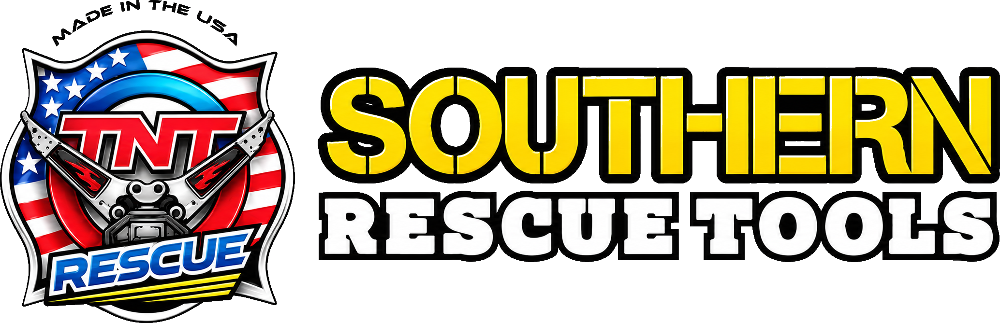
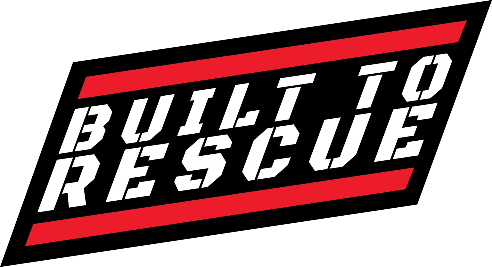
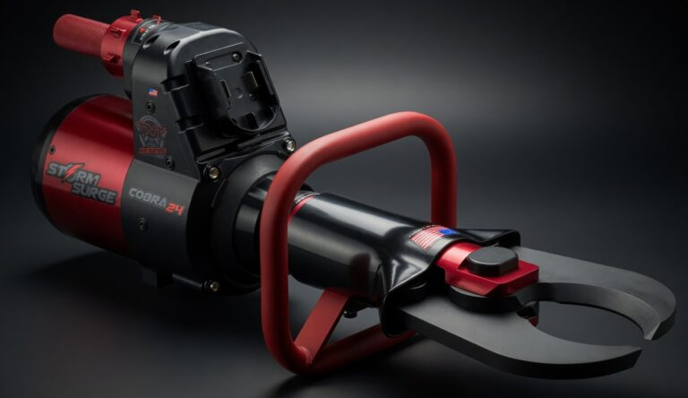
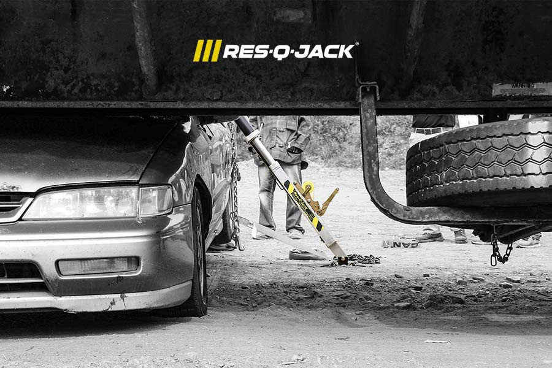

Equipment Sales
Tool packages, product demos, quotes, and department-specific equipment planning.

727-517-5505
Southern Rescue Tools helps fire rescue departments choose, maintain, repair, and train on mission-ready equipment from TNT Rescue Tools, Res-Q-Jack, RHYNO, Matjack, Zephyr Industries, and FMI.
Tool packages, product demos, quotes, and department-specific equipment planning.
Scheduled maintenance, troubleshooting, warranty support, and repair coordination.
Hands-on familiarization for extrication tools, stabilization systems, glass access, and lifting bags.

TNT Rescue Tools
Battery-powered and hose-line rescue tools for extrication, with battery platform options and a broad lineup of cutters, spreaders, pumps, and accessories.
Visit TNT Rescue
Res-Q-Jack
Vehicle stabilization struts, lifting struts, trench shoring products, and training support for first responders, fire fighters, and EMS.
Visit Res-Q-Jack
RHYNO
Laminated windshield cutter tools and accessories for fast, controlled glass access during rescue and extrication operations.
Visit RHYNO
Matjack
High-pressure air lifting bags, medium and low-pressure cushions, and rescue air bag solutions for Fire & Rescue applications.
Visit Matjack
Zephyr Industries
Southern Rescue Tools is a dealer for Zephyr Industries, including TNT brackets and mounting solutions Zephyr builds for TNT rescue tools.
View Zephyr TNT Brackets
FMI
Southern Rescue Tools is a dealer for FMI compartment management, custom fabrication, and emergency vehicle equipment storage solutions.
Visit FMIService, Repairs, Support
Southern Rescue Tools supports departments with annual service, repairs, warranty coordination, equipment checks, demos, and purchase follow-through. The goal is simple: dependable tools, fewer surprises, and faster return-to-service.
Schedule ServiceTool familiarization, setup, operation, and department-specific deployment workflows.
Res-Q-Jack fundamentals for vehicle stabilization, lifting, and technical rescue scenarios.
RHYNO glass access, Matjack lifting bags, Zephyr brackets, and FMI compartment solutions.
Established in 2007 by 30-year veteran Company Officer Dean Shepherd, Southern Rescue Tools provides Florida's fire service community with state-of-the-art extrication equipment and leading-edge training applicable to all forms of vehicular rescue.
Based in Pinellas County, Florida, Dean and his team of extrication specialists, instructors, and certified tool mechanics provide responsive, accurate, and knowledgeable equipment sales, service, and training for progressive organizations throughout the state.
Industry-leading manufacturers including TNT Rescue Systems, Res-Q-Jack Stabilization Equipment, Matjack, Rhyno Windshield Cutter, Zephyr Industries, and FMI rely on Southern Rescue Tools to deliver and service their products with a personal touch and a professional commitment to excellence.
Tool packages, equipment planning, product information, quotes, and no-cost demonstrations.
TNT certified tool mechanics restore systems to factory specifications using a mobile tool shop.
Extrication programs from four-hour awareness sessions to thirty-two-hour technician classes.
Ready When You Are
Serving fire rescue departments throughout Florida and Georgia.